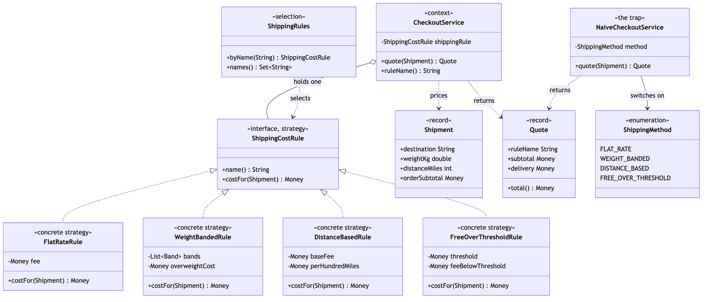

Strategy Pattern
Demonstrates the Behavioural Strategy design pattern using delivery pricing at checkout as an example.
ShippingCostRule— the strategy. One interface:name()returns a display name,costFor(Shipment)returns the delivery charge.FlatRateRule/WeightBandedRule/DistanceBasedRule/FreeOverThresholdRule— the concrete strategies. One pricing policy each: the same charge on everything, a band table by weight, a base fee plus so much per hundred miles, and free delivery over a threshold.CheckoutService— the context. Holds oneShippingCostRule, calls it exactly once per quote, and has no branch anywhere that depends on which rule it is holding.Shipment/Quote— records carrying the request and the answer.Shipmentdeliberately carries more than any single rule uses, so that a new rule never has to change the interface.ShippingRules— the selection point. Maps a configuration name onto the rule it selects, once, at the edge; an unknown name is rejected rather than defaulted.NaiveCheckoutService/ShippingMethod— the trap, kept for contrast. One method branching on an enum, with adefaultthat silently ships for free the day a fifth constant is added.ShippingCostDemo— runnable entry point that prices the same three shipments under all four rules, swaps the rule at runtime, and shows an unknown rule name being refused.
Run
./gradlew runWhich prints:
Four rules, priced against the same three shipments.
Rule "flat" -> Flat rate
Edinburgh, 0.4kg, 45 miles, order £18.00
Flat rate: subtotal £18.00 + delivery £4.99 = £22.99
Cardiff, 6.5kg, 180 miles, order £64.00
Flat rate: subtotal £64.00 + delivery £4.99 = £68.99
Inverness, 24.0kg, 560 miles, order £31.50
Flat rate: subtotal £31.50 + delivery £4.99 = £36.49
Rule "weight" -> Weight banded
Edinburgh, 0.4kg, 45 miles, order £18.00
Weight banded: subtotal £18.00 + delivery £3.50 = £21.50
Cardiff, 6.5kg, 180 miles, order £64.00
Weight banded: subtotal £64.00 + delivery £12.00 = £76.00
Inverness, 24.0kg, 560 miles, order £31.50
Weight banded: subtotal £31.50 + delivery £25.00 = £56.50
Rule "distance" -> Distance based
Edinburgh, 0.4kg, 45 miles, order £18.00
Distance based: subtotal £18.00 + delivery £3.50 = £21.50
Cardiff, 6.5kg, 180 miles, order £64.00
Distance based: subtotal £64.00 + delivery £5.00 = £69.00
Inverness, 24.0kg, 560 miles, order £31.50
Distance based: subtotal £31.50 + delivery £11.00 = £42.50
Rule "campaign" -> Free over £50.00
Edinburgh, 0.4kg, 45 miles, order £18.00
Free over £50.00: subtotal £18.00 + delivery £4.99 = £22.99
Cardiff, 6.5kg, 180 miles, order £64.00
Free over £50.00: subtotal £64.00 + delivery FREE = £64.00
Inverness, 24.0kg, 560 miles, order £31.50
Free over £50.00: subtotal £31.50 + delivery £4.99 = £36.49
The client is the same object every time.
CheckoutService never asks which rule it is holding:
flat delivery £4.99
weight delivery £12.00
distance delivery £5.00
campaign delivery FREE
Swapping the rule at runtime changes the price, not the code:
Weight banded: subtotal £18.00 + delivery £3.50 = £21.50
Free over £50.00: subtotal £18.00 + delivery £4.99 = £22.99
An unknown rule name is refused, not defaulted:
Rejected: no shipping rule called "second-class"; known rules are [flat, weight, distance, campaign]Test
./gradlew test17 tests across 3 classes. ShippingCostRuleTest prices each rule in isolation, in four @Nested groups — which is itself the point, since none of these tests has to go through checkout or supply the fields its rule does not read. ShippingRulesTest covers selection, including that an unknown name is refused rather than defaulted. CheckoutServiceTest holds the tests that actually prove the pattern was applied: a rule defined entirely inside the test works unchanged, the rule is consulted exactly once per quote, and every registered rule is substitutable for every other.
Learning Material
Start here if you are new to the pattern — the docs are ordered as a learning path.
| Document | What it covers |
|---|---|
docs/prerequisites.md | What to know and install before you start |
docs/problem-statement.md | The problem the pattern solves, and why the naive approach hurts |
docs/strategy-pattern-explained.md | The pattern itself, the code walked through, pitfalls, and comparisons |
docs/class-diagram.md | Static structure |
docs/uml-diagram.md | Runtime call flow |
docs/animation.html | Animated, step-by-step walkthrough — open in a browser. Optional narration via the Narration button |
docs/session.md | A 60-minute guided session plan for teaching it |
docs/youtube.md | Title, description, chapters and thumbnail for publishing the video |
docs/thumbnail.png | The 1280×720 image to upload as the YouTube thumbnail |
docs/spec.md | The project specification — problem, code, video and publishing quality bar. Also as spec.html |
video/ | A narrated video, plus the script and build pipeline |

The pattern in one picture

Video
video/strategy-pattern-explained.mp4 — 1080p, narrated. An audio-only version is alongside it. See video/README.md to rebuild or re-record it.
Also available with a framework
Strategy with Spring Pattern reruns this idea on a real framework, and shows what the framework adds and where it can undo the pattern. Watch this project first.